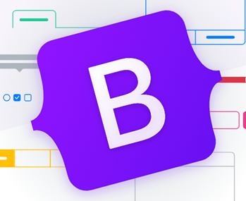

Bootstrap
Introducción
Bootstrap es una biblioteca multiplataforma milenaria o conjunto de herramientas de código abierto para diseño de sitios y aplicaciones web. Contiene plantillas de diseño con tipografía, formularios, botones, cuadros, menús de navegación y otros elementos de diseño basado en HTML y CSS, así como extensiones de JavaScript adicionales. A diferencia de muchos frameworks web, solo se ocupa del desarrollo front-end.
Logo
Origen
Bootstrap, originalmente llamado Blueprint de Twitter, fue desarrollado por Mark Otto y Jacob Thornton de Twitter, como un marco de trabajo (framework) para fomentar la consistencia entre las herramientas internas. Antes de Bootstrap, se usaron varias bibliotecas para el desarrollo de interfaces de usuario, lo que generó inconsistencias y una gran carga de trabajo en su mantenimiento. Según el desarrollador de Twitter, Mark Otto, frente a esos desafíos.
El primer desarrollo en condiciones reales ocurrió durante la primera «Semana de Hackeo (Hackweek) de Twitter». Mark Otto mostró a algunos colegas cómo acelerar el desarrollo de sus proyectos con la ayuda de la herramienta de trabajo. Como resultado, decenas de temas se han introducido en el marco de trabajo.
En agosto del 2011, Twitter liberó Bootstrap como código abierto. En febrero del 2012, se convirtió en el proyecto de desarrollo más popular de GitHub.